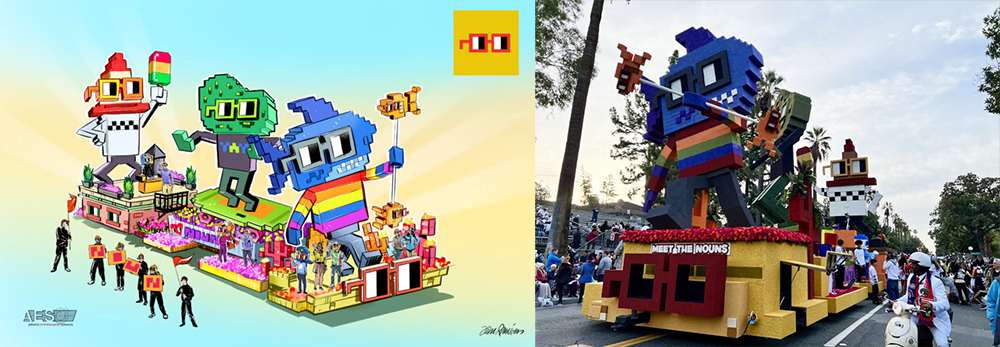
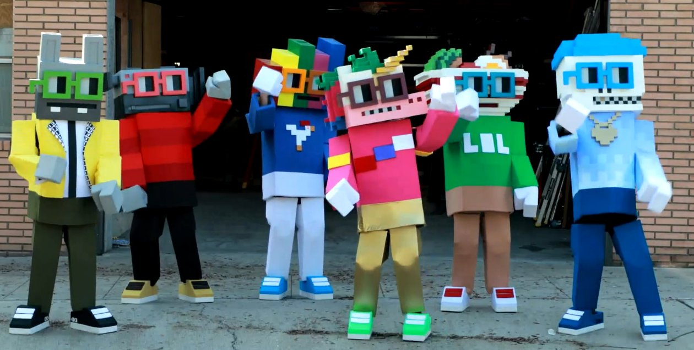

TLDR:
Stoopid Buddy Stoodios brings Nouns to life in the 2023 Rose Bowl Parade and produces a documentary about the events leading up to and through the main event!
Details:
Nouns funded Stoopid Buddy Stoodios to create a Rose Bowl Parade float and a full-length documentary via Proposal 73: “Nouns Around Town - a Documentary Film Proposal from the Makers of Robot Chicken.”
The team successfully produced a Nouns Rose Bowl Parade float, putting on an incredible show that was broadcast on national television, reaching over 50 million viewers worldwide.
They also produced six full-sized Nouns costumes that were worn during the Parade, in skits leading up to the parade, and made appearances at the documentary premiere and after-party.
The Stoopid Buddy team collaborated with Nouns OTG to bring the Rose Bowl Parade to life, adding on-the-ground support, performers, and merchandise. Their efforts are showcased through various videos and media coverage.
The entire process was documented in a feature-length documentary, “Shark, Pickle, Cone.” The team premiered the documentary at Consensus in Austin, TX, on May 29, 2024 where they invited DAO members and guests to be the first to watch.
Shark, Pickle, Cone
The documentary not only showcases the hard work behind the Nouns Rose Bowl Parade float but also highlights the dynamic of the DAO during the filming (mid-2022 to early 2023). It captures the love, passion, and dedication for Nouns, a decentralized brand, and on-chain community.
The full documentary can be watched at SharkPickleCone.wtf
Media Coverage:
Below is some of the media coverage and content that came from this series of completed proposals:
- Decrypt: Nouns Ethereum NFTs Will Appear in 2023 Rose Parade
- Rarity Sniper: Nouns NFTs to Appear in 2023 Rose Bowl Parade
- Yahoo Finance: Nouns Ethereum NFTs Appear in 2023 Rose Parade
- KTLA: The 134th Rose Parade in photos
- Ask Long Beach: Meet the Nouns
- League of Buddies: Stoopid Buddy Brings Nouns DAO to the Rose Parade
- Medium: Rose Parade 2023 to Feature a Special Nouns NFT Themed Float
- NFT Lately: Seth Green’s Nouns Ethereum NFTs To Run in the 2023 Rose Parade
- NFT Plazas: Nouns NFTs to Run Amok at this Year’s Rose Parade
- The Crypto Times: Nouns NFTs Will Join the 2023 Rose Parade
- CoinGape: Nouns NFTs Will be Seen in Real World in 2023
- AWN.com: Stoopid Buddy Stoodios Transports ‘Nouns’ into the 134th Annual Rose Parade
- League of Buddies: Nouns Documentary "Shark, Pickle, Cone" Premieres in Austion
Content:
Dates and Funding Details:
- Proposal #72 Funded: June 7th, 2022 (funded 609.71 ETH)
- OTG Add-on Proposal #166 funded: November 10, 2022 (funded 62 ETH)
- Rose Bowl Parade: January 1st, 2023
- Documentary Premiere Add-on Proposal #526 funded: April 15, 2024 (funded $155,000 USD)
- Documentary Premiere: May 29th, 2024
More on the team:
Stoopid Buddy Stoodios, renowned for its innovative and quirky animation, has made a significant mark in the entertainment industry. Founded by Seth Green, Matthew Senreich, John Harvatine IV, and Eric Towner, the studio has consistently delivered unique and engaging content. From their iconic "Robot Chicken" series to various collaborations with major brands and networks, Stoopid Buddy Stoodios combines creativity with technical expertise. Their projects often blend humor with cutting-edge stop-motion animation, making them a beloved entity in the world of animation.
In addition to the Rose Bowl Parade float and documentary, and as of June 2024 the team has also contributed to to Nouns through 'Nouns Shorts' and 'Nouns Fest' (proposals: 180, 259, and 397). They were also gifted four nouns for their work on nouns through proposal 542.
Last Updated: June, 2024